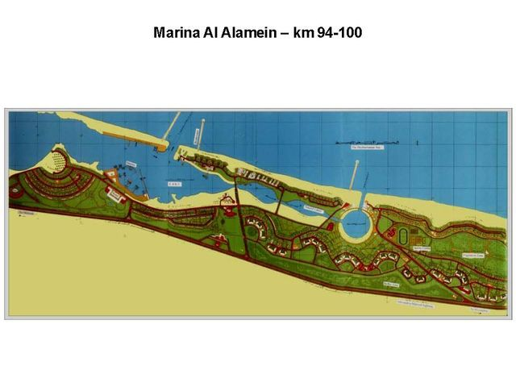

El-Shams City Master Planning, Assiut
Master plan · Assiut, Egypt
Master planning of a city in Assiut for Ministry of Housing and New Communities.
Partners
PUD
Client
Ministry of Housing and New Communities
More from Assiut
1972Regional and Urban Planning for Assiut GovernorateAssiut · 1972 Pyramids Plateau Destination Master PlanGiza · 2024-2025
Pyramids Plateau Destination Master PlanGiza · 2024-2025 Golden Gate, New CairoNew Cairo · 2020-2021
Golden Gate, New CairoNew Cairo · 2020-2021 Regional Vision for the North Coast and Tourism Development Master Plan for Fuka-MatrouhFuka-Matrouh sub-region, North Coast · 2011
Regional Vision for the North Coast and Tourism Development Master Plan for Fuka-MatrouhFuka-Matrouh sub-region, North Coast · 2011 Tut Amun Village Hotel and ResortAswan · 1981
Tut Amun Village Hotel and ResortAswan · 1981
Pyramids Plateau Destination Master PlanGiza · 2024-2025Golden Gate, New CairoNew Cairo · 2020-2021Regional Vision for the North Coast and Tourism Development Master Plan for Fuka-MatrouhFuka-Matrouh sub-region, North Coast · 2011
Marina El AlameinNorth Coast · 1985-1997Tut Amun Village Hotel and ResortAswan · 1981